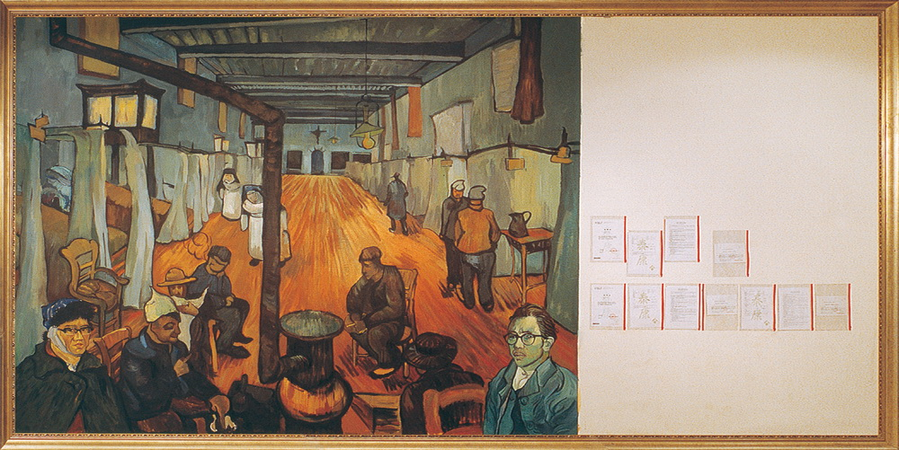
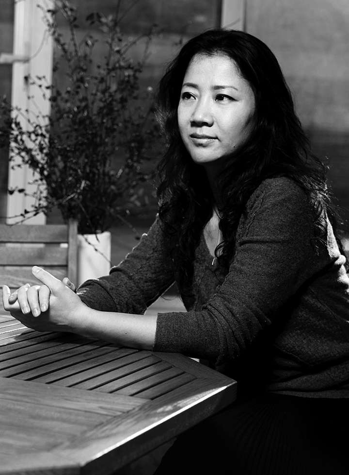

《泰康计划》一个针对体制的公共理想
唐昕
“一件作品”是我今年策划的一个系列展览，计划每次邀请两个或三个艺术家共同合作完成一件作品。《泰康计划》是由洪浩和颜磊合作完成的，是这个系列的首展，已于今年4月成功举办。作品主要由两部分组成：一部分是一幅3×5.9米的绘画；一部分是三份总值近700万元人民币的人身保险。
这是一件观念艺术作品，从语言上看洪浩和颜磊一开始采用的就不是主客体反映论方法，而是强调符号的深层和多意义的视觉方法论，他们选择了“梵•高”和“泰康”作为两个主要创作元素。
1、 梵•高
梵•高对于一代中国艺术家意义非凡，是这一代中国艺术家的精神偶像，像梵•高一样画画成为他们曾经的梦想。《泰康计划》的绘画部分是被复制放大的梵•高的《阿尔勒医院病房》，

同时，颜磊和洪浩将自己的形象放进病房画面中与自己的偶像同病相怜。从技法上这幅画并非忠实于后印象主义的原作手法，而是忠实于普通印刷品的翻印效果，呈现给观者的是通过误读学习西方艺术的结果。其实，误读是中国当代艺术发展历史的重要部分，而这种误读还远不止于此。
上个世纪的最后30年，中国文化信息资源仍处于相对封闭的状态，资讯非常落后，艺术家们只能通过有限的劣质印刷品了解西方艺术，也认识了梵•高。结合想像，他们把梵•高当作西方艺术家的化身，把“能像梵•高一样画画”当成了自己的理想艺术状态而追求。从某种意义上说，它是中国艺术家对于不甚了解的西方艺术体制的一种憧憬，是对于西方艺术体制误读的结果。
那时候，中国的当代艺术刚刚产生便被排斥在国内官方艺术体制之外，然而却很快被西方当作中国艺术的主流予以支持，于是这些被国内旧体制放逐的艺术家们便游离在国内和西方两个体制的缝隙之间存在。他们不属于其中任何一边，但对于国内旧体制的失望，越发让他们对于西方艺术体制怀有一种不自觉的向往。他们期望国内能够形成某种机制，也像西方一样有画廊，有经纪人，有热爱艺术的收藏家可以给予支持，他们就可以像西方艺术家那样，想梵•高那样畅快地投入到艺术创作中了。这是那时存在于这些艺术家中的一个公共理想。今天，当了解了西方艺术体制之利弊，国内萌芽的新型体制即将取代旧体制，人们似乎清楚地可以看到它的未来之路的时候，《泰康计划》告诉了我们一种感受。这种感受与其说是欣喜，毋宁说是疑惑。对于两种价值体系的爱恨交加，使得“病房”变成了矛盾冲突的突发现场。
由于对于体制建设的怀疑和警觉，在《泰康计划》中洪浩和颜磊从一开始就把自己和“泰康”对立起来，把病房和保险对立起来。
2、泰康
《泰康计划》针对国内当前艺术体制和艺术生态环境，它对现实的批判不同于传统的现实主义那样带有明确的政治目标，而使用完全不同的语言方式和思维方式，追求的是一种态度。如果将这种态度泛社会化，它是一种新型的社会政治态度，不以批判为目的，而是通过强调作品的“象征力量”引发人们思考，提示人们去修正或改善所存在的问题。
《泰康计划》主要从两个方面跟“泰康”发生关系，一是泰康人寿投资泰康顶层空间参与艺术发展；另一方面，“泰康”本身的性质是保险公司。泰康人寿保险股份有限公司是中国第二代保险公司之一，从2000年起每年把相当的一部分资金投入到公司的艺术部门即泰康顶层空间，用于当代艺术活动和展览，支持当代艺术在中国本土的发展。这在今天的中国金融行业是绝无仅有的，泰康人寿也因此在艺术界为人所知。
当中国新型艺术体制正在萌芽的时候，各种力量都有可能对它的成长起到作品，寻找到一种真正的动力机制，可以推动艺术良性发展的机制具有非常重要的意义。“泰康”在这里象征艺术体制中的某一方面的力量被强调，并借助它保险公司的性质，提示艺术体制对艺术发展或艺术家之间相互作用的关系问题。特别是借喻体制能够对于艺术发展的推动和对于艺术家的保护性作用的愿望，谁给艺术的发展以保险呢？他们通过作品置疑以商业成功为目的的艺术体制。
３、保险
《泰康计划》中的三份总值近700万元人民币的人身保险是由泰康人寿为他俩购买的。人身保险是现实生活中人们购买的用于个人身体本身、个人健康和生命的商业保障产品，一般包括人寿保险、健康保险和人身意外保险几类。最有意思的是为了强调作品的象征力量，他俩原本希望依据梵•高的病症，针对耳朵或精神疾患投保。但国内目前没有这样的保险产品，如果为此单独申请一个新的保险产品，需要经过保险公司和国家保险监督管理委员会的批准，惊动保险体制里的每一个环节，时间至少需要一年，而且可能性极小。于是，他们只得从现有的产品中挑选了“意外伤害”和“住院医疗”两种保险。根据体检结果，颜磊500万人民币的“意外伤害”险和20多万人民币的“住院医疗”险都通过批准。洪浩只有150万人民币的“意外伤害”险获得批准。之后，又因他们所购保险额度太高，还必须要由泰康人寿向中国再保险和瑞士再保险分保以共同承担风险，几经周折后该保险单才最终生效。于是这件作品又触及到了中国的保险体制。这是这件作品的又一层象征意义，即对于建立一种非单元化的公共关系和公共制度的主张。
《泰康计划》与其说是一件艺术作品，倒不如说它更像是一件艺术产品，因为它与艺术家本人现实生活之间缠绕不清的关系打破了传统艺术作品与生活间的明确界限。因为通常而言，创作过程是一件作品的孕育过程，创作过程结束，作品就诞生了，从此作品跟艺术家本人不再有太多关系。然而《泰康计划》中艺术作品与艺术过程的关系变得有些复杂。三份人身保险原本是现实的、生活中的事物，产品期限一年，当它们被直接作为创作元素放入作品中，作品也被赋予了一年的时间性。而保险本身也成了一种新的艺术媒介，如果洪浩和颜磊在这一年中身体、健康未发生保险责任所规定的意外状况，作品的形态和状况将不再产生任何变化。相反，如果此期间他们出现了保险意外情况，泰康人寿以及两个再保险公司将按保险合同予以陪付，这种陪付行为就将成为这件作品的后续部分。因此，这件作品到目前尚未全部完成。而这后续部分由谁来完成？怎样完成？存在很大的偶然性和可能性，非艺术家本人能够控制，与艺术家的身体状况、中国的保险制度、法律制度都有关系，也就是说跟艺术家这一年的个人生活有关。这里“作品”与“产品”之间的区别重新界定了“艺术”与“生活”的关系。
《泰康计划》以拓展艺术媒介，赋予真实的、生活化的表达方式以挑战性的力量，继续着对艺术创作方法论的思考，这也正是策划“一件作品”系列展览我很高兴看到的作品，相信此系列后面的作品同样精彩，我们期待着。
唐昕
2006年6月
注：颜磊和洪浩1997年曾经合作过作品《邀请信》，他俩以Ielnay Oahgnoh (二人姓名拼音的逆序书写)的名义向全国众多艺术界人士发出了卡塞尔文献展的邀请信。

唐昕
1990 毕业于天津科技大学
1997-2002 独立策展人，策划中国当代艺术展览及组织中国当代艺术在欧洲的交流活动。
2003 创办泰康空间（国内大型金融企业投资的首家非营利当代艺术机构）
2003-至今 泰康人寿保险股份有限公司艺术品收藏部负责人，泰康空间艺术总监、策展人。